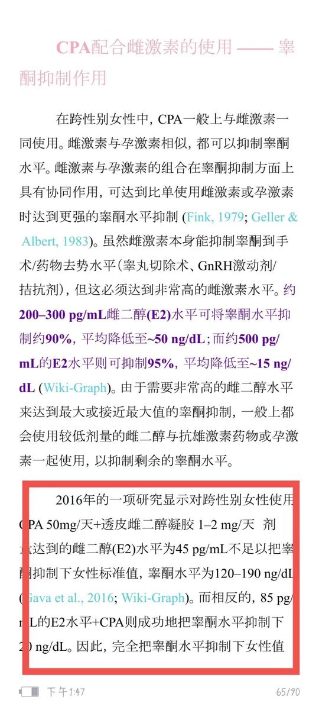
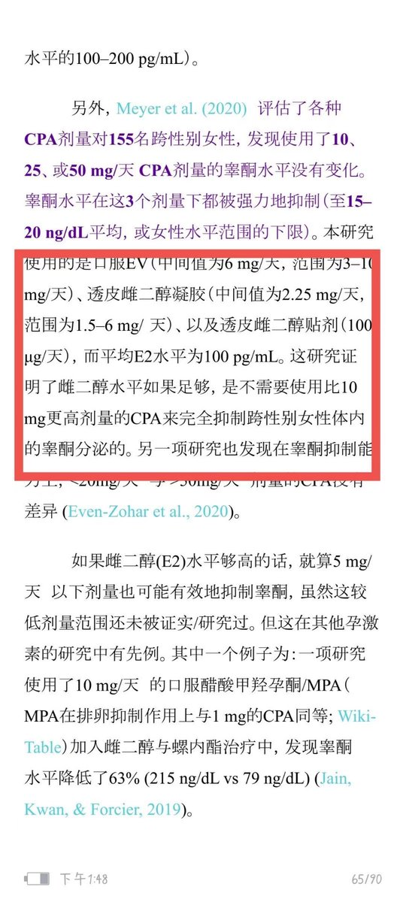
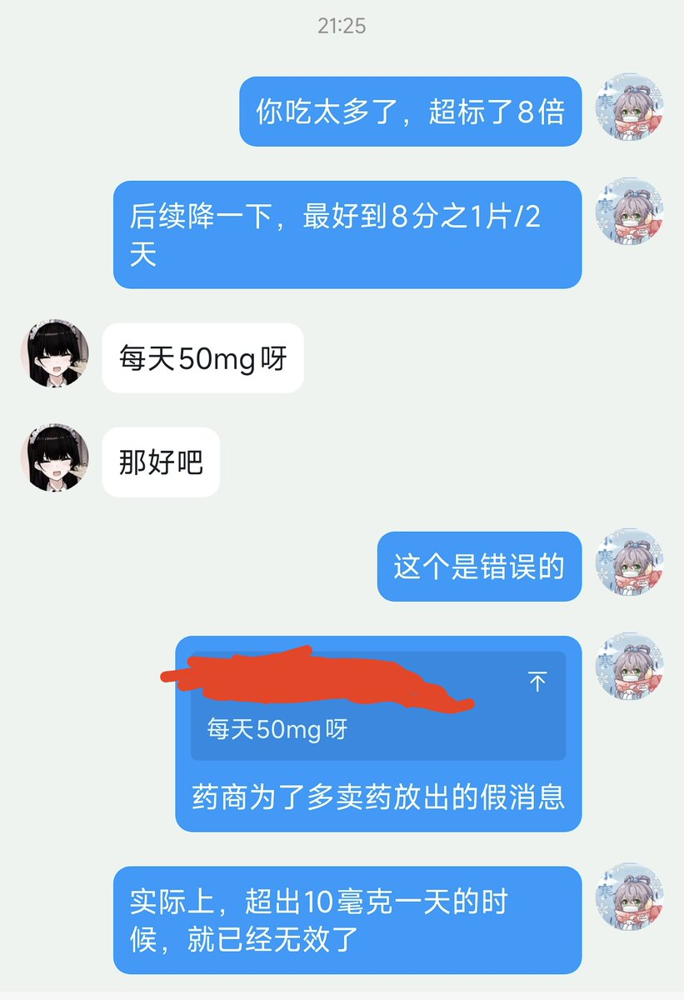

只要不遇到高温、潮湿、暴晒等情况，醋酸环丙孕酮（色普龙），戊酸雌二醇（补佳乐），雌二醇（诺坤复），雌二醇凝胶（爱斯妥）等HRT药物的实际保质期均在商品保质期的两倍以上，甚至理论上在阴凉、干燥（如冷藏冰箱）的环境下，储存十年仍然对药效难以产生统计学上的影响。
无需对hrt药物的过期问题产生过度忧虑，药品的储存条件才是重中之重。
依据来源：
1. 关于HRT药物（醋酸环丙孕酮/色普龙、戊酸雌二醇/补佳乐、雌二醇等）的实际保质期远超标示日期
支持证据：大量科学研究和FDA的Shelf Life Extension Program (SLEP) 显示，许多固体口服药物和某些制剂在适当储存条件下**（阴凉、干燥、避光、无高温/潮湿/暴晒）， potency（效力）可保留90%以上多年。SLEP测试显示88%的药物批次可延长有效期，平均延长66个月（约5.5年），最长可达15年以上甚至更久。
口服片剂（如色普龙/Androcur）和雌激素制剂（如Estradiol valerate）通常属于较稳定的类别。社区和有限临床讨论中提到，正确储存的estradiol valerate注射剂或片剂可能在过期后2-5年仍保持良好稳定性（前提是外观无变化、无污染）。
“储存十年仍难以产生统计学影响”（尤其是冷藏干燥环境下）
关键限制：
注射剂开封后通常仅推荐28天内使用（无菌考虑）。
外观检查重要：变色、结块、异味等即丢弃。
2. 储存条件远比“是否过期”重要**，过度焦虑过期标签不必要，许多药物实际耐用性强。储存时保持阴凉干燥是通用好习惯。

无需对hrt药物的过期问题产生过度忧虑，药品的储存条件才是重中之重。
依据来源：
1. 关于HRT药物（醋酸环丙孕酮/色普龙、戊酸雌二醇/补佳乐、雌二醇等）的实际保质期远超标示日期
支持证据：大量科学研究和FDA的Shelf Life Extension Program (SLEP) 显示，许多固体口服药物和某些制剂在适当储存条件下**（阴凉、干燥、避光、无高温/潮湿/暴晒）， potency（效力）可保留90%以上多年。SLEP测试显示88%的药物批次可延长有效期，平均延长66个月（约5.5年），最长可达15年以上甚至更久。
口服片剂（如色普龙/Androcur）和雌激素制剂（如Estradiol valerate）通常属于较稳定的类别。社区和有限临床讨论中提到，正确储存的estradiol valerate注射剂或片剂可能在过期后2-5年仍保持良好稳定性（前提是外观无变化、无污染）。
“储存十年仍难以产生统计学影响”（尤其是冷藏干燥环境下）
关键限制：
注射剂开封后通常仅推荐28天内使用（无菌考虑）。
外观检查重要：变色、结块、异味等即丢弃。
2. 储存条件远比“是否过期”重要**，过度焦虑过期标签不必要，许多药物实际耐用性强。储存时保持阴凉干燥是通用好习惯。



只要不遇到高温、潮湿、暴晒等情况，醋酸环丙孕酮（色普龙），戊酸雌二醇（补佳乐），雌二醇（诺坤复），雌二醇凝胶（爱斯妥）等HRT药物的实际保质期均在商品保质期的两倍以上，甚至理论上在阴凉、干燥（如冷藏冰箱）的环境下，储存十年仍然对药效难以产生统计学上的影响。 https://t.co/InQjHZCB9n
目前仍然有mtf因为受到无良药商蛊惑每天吃50毫克的色普龙，实际上推荐剂量是每2天12.5毫克（平均每天6.25毫克）再次再次强调！ https://t.co/44laGnlPnb https://t.co/gG46wKuL2D